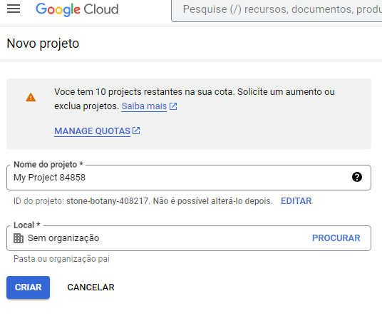
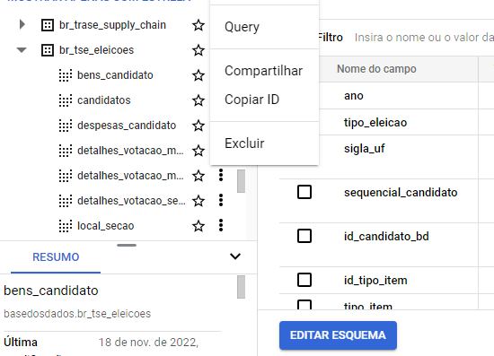
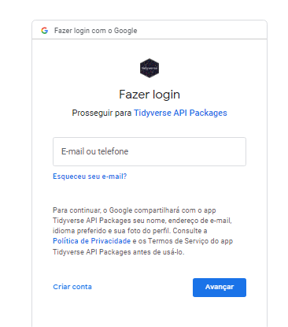

#install.packages("basedosdados")
library("basedosdados")Introdução
A organização Base dos Dados fornece uma fonte riquissima dados públicos podendo ser acessados via python, R, SQL e Stata. Eles fornecessem tabelas tratadas de diferentes assuntos de forma gratuita e paga.
Mãos a obra
Google Cloud
Tenha uma conta Google logada, acesse seu workspace do Google Cloud e crie um projeto.

Cuidado com a quantidade de projetos.
Como qualquer serviço da Google existem planos gratuitos e pagos. Atente-se aos limites de números projetos e o tamanho da requisição que você pode fazer mensalmente.
RStudio
No R instale e carregue a biblioteca.
Forneça o id do seu projeto.
basedosdados::set_billing_id("Id do Projeto")Selecionando os dados
Existem diferentes formas de fazer a requisição dos dados e esta disponível na documentação. A forma favorita é criando uma query, pois posso selecionar uma pequena amostra dos dados. Primeiro vá ao datalake da base dos dados e copie o ID da tabela de interesse.

A query pode ser construida dessa forma (como se fosse uma requisição de dados no SQL).
query <- "SELECT *
FROM basedosdados.br_tse_eleicoes.resultados_candidato_municipio
WHERE ano = 2022
AND cargo = \'presidente\'
AND sigla_uf = \'SP\'" # Cuidado com as strings
# se quiser poder por "limit 10" no final para trazer uma pequena amostra
Para quem não tem muita afinidade com SQL
SELECT * -> Selecionar todas as colunas da tabela.
FROM -> Especificar qual a tabela
WHERE -> Filtros
AND -> Concatenar todos os filtros
Agora você pode baixar os dados definindo um diretório e fomato.
basedosdados::download(query = query,path = "Diretório\dados.csv")Realize a autenticação

Permissões
Certifiquisse de fornecer todas permissões
Agora você tem os dados disponíveis no seu computador para realizar as análises. Reforço o cuidado com o volume de dados para evitar incovenientes de ter que trocar o email do seu projeto ou ter que esperar sua cota renovar.